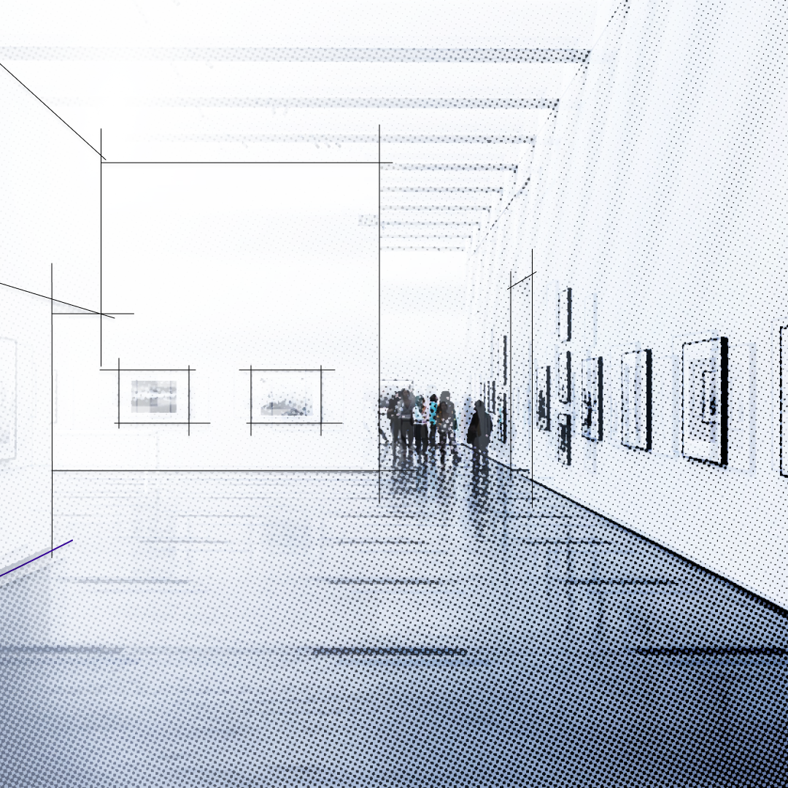
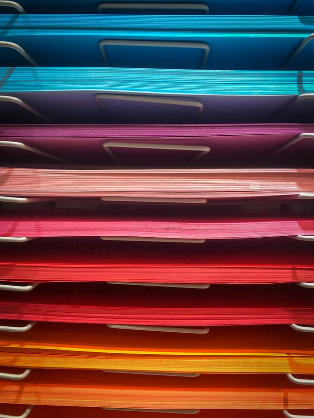
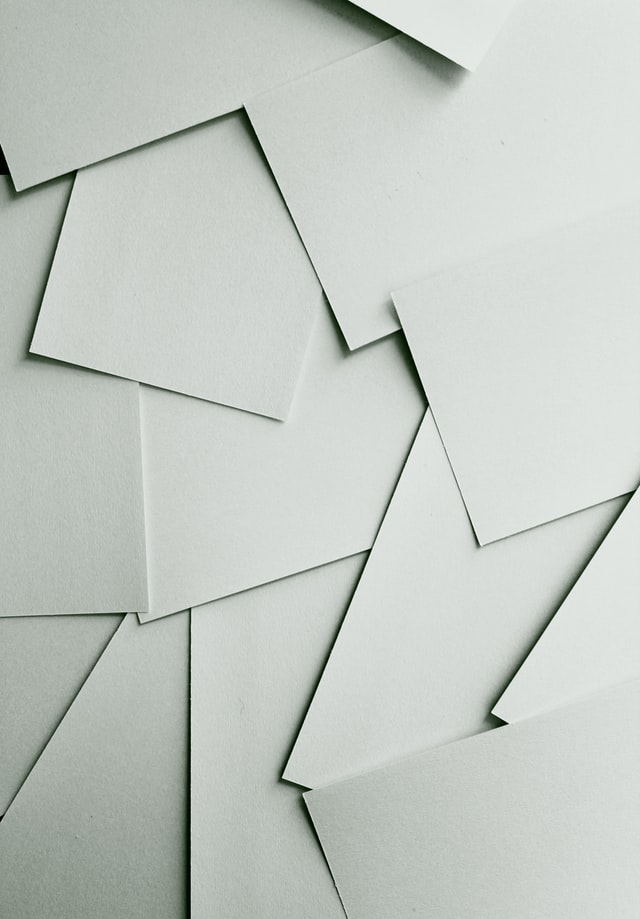

Projetos & Ideias
Projetos & Ideias
Está página funciona como um caderno de ideias, anotações e colagens público. Tudo que está aqui ainda se encontra em um estágio muito recente para ser considerado um produto finalizado, mas ainda assim são ideias, rabiscos, coleções de links ou pequenos protótipos de coisas interessantes.
-

UnFold Portifolio
Todo designer precisa de um portifólio online, com tantas opções disponiveis o que impede a maioria de manter algo assim?
Entre as dificuldades de manter vários serviços organizados, a falta de tempo, a falta de conhecimento de como faze-lo, ou até mesmo, o medo de ter seu trabalho exposto em um serviço de terceiros.
São vários os possiveis motivos e impecilhos para não manter algo como www.suamarca.com.br no ar, mas e se fosse simples? E se sua organização diária de arquivos pudesse gerar um portifólio on-line?
A ideia do UnFold Portifólio é se tornar uma aplicação que pega sua pasta de arquivos comum e os formata no estilo de um site estático que possa ser enviado para web, sem nenhum tipo ou com o minimo de configuração adicional possivel. Um software invisivel e siliencioso que aumente seu alcance digital.
Hoje a ideia se encontra no estágio de pesquisa de mercado, afinal se a ideia é ser invisivel e funcionar juntamente com seu workflow é nescessário entender como funciona esse workflow. Se você é designer e se interessou pela ideia responda algumas perguntinhas para ajudar a entender melhor como você organiza seu portifólio atualmente
O questionário é pequeno (leva no máximo 10 minutinhos) e se encontra AQUI. Caso tenha alguma sugestão entre em CONTATO e vamos trocar ideias